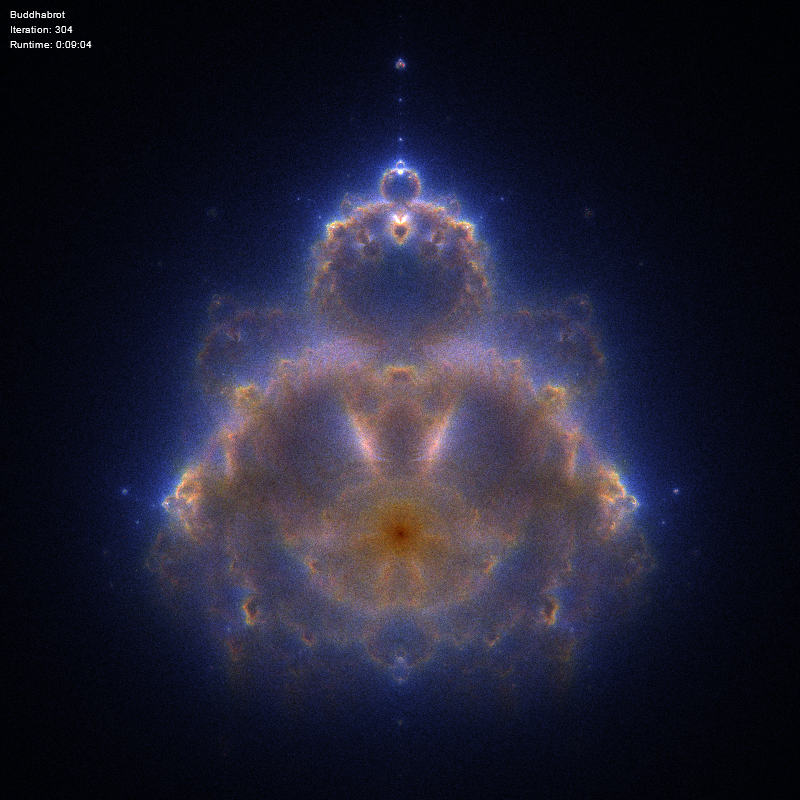
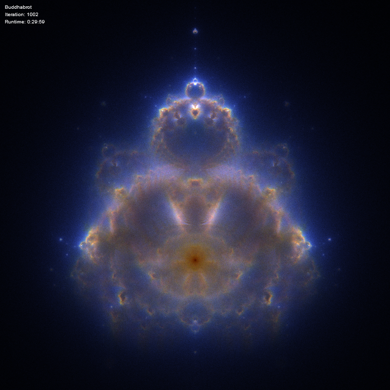
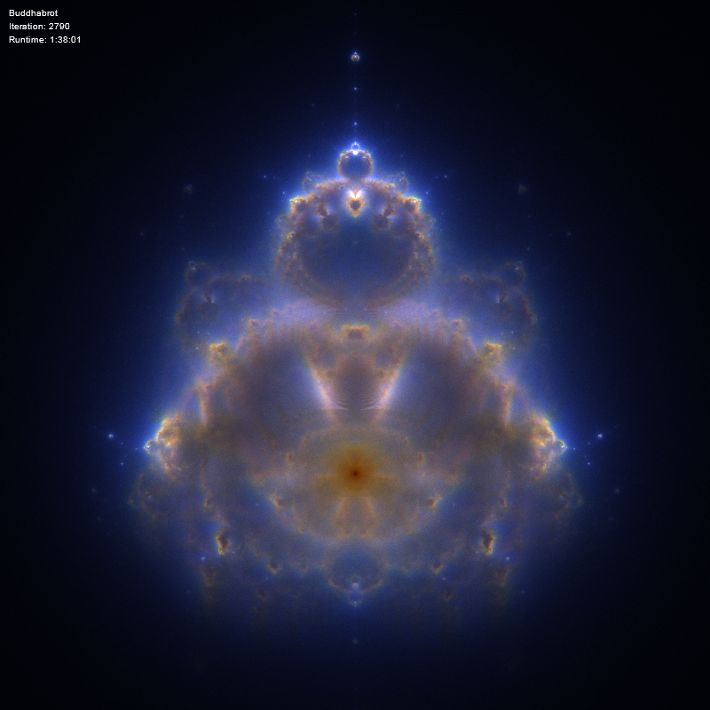

Project is JS + 2D canvas Buddhabrot generator. Version 2.0 will be based on WebGL.
Sebastian Poręba (sebastian.poreba@gmail.com)
www.smashinglabs.pl
Use these if Buddhabrot kills your browser:
Examples of rendered Buddhabrots:
300 iterations:

1000 iterations:

2800 iterations:

You can download this project in either zip or tar formats.
You can also clone the project with Git by running:
$ git clone git://github.com/fridek/buddhabrot
Inspired by: